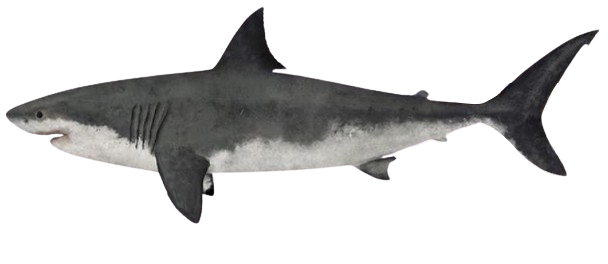
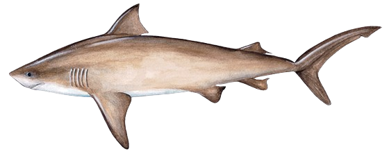

Australia is a country known for its wide variety of ecosystems. From vast desert to tropical rainforest, Australia has it all. With this comes the many animal species which roam our land, some of which are dangerous and deterring to visitors. Perhaps the most deterring of these is the many sharks which patrol our waters. This page shows the statistics and locations of all recorded shark-human encounters from 2010 to 2022.
The visualisation on the left is a map representing each of the shark-human incidents from 2010 to 2022. The map can show patterns in shark behaviour from year to year due to different weather patterns or feeding patterns.
The map belows shows the same visualisation with all shark interactions from the same period of time. Paired with the visualisation on the left, these visualisations can show which areas around the country are most prone to shark incidents.
The scatter plot on the left involves the shark-human incident data, plotting them on a chart based on latitude where the incident occurred and month of the year that the incident occurred. The greater the latitude, the further north the incident occurred, and the warmer the water.
The NSW - Queensland coastal border is at approximately -28.164 degrees latitude. The Vic - Queensland coastal border is at approximately -37.5 degrees latitude. The plot shows how the majority of the incidents occurred at the latitudes of NSW and Western Australia, where the water is moderate, and home to many sharks. The Month axis aims to explore if sharks are more likely to attack at different times of the year.
The Above donut chart shows the yearly distribution of shark incidents by severity. This visualisation shows the the rarity of fatal shark attacks, when compared to all shark incidents. The tooltips on each shark image also display the statistics involving that particular shark breed.
The left line chart presents the yearly fatalities caused by sharks. This data indicates that there is not an obvious trend describing shark behaviour. The maximum value for the chart is 8 fatalities which occurred in 2022.
In conclusion, this visualisation aims to give any travellers coming to Australia an insight into the true nature of sharks, and the areas they inhabit.